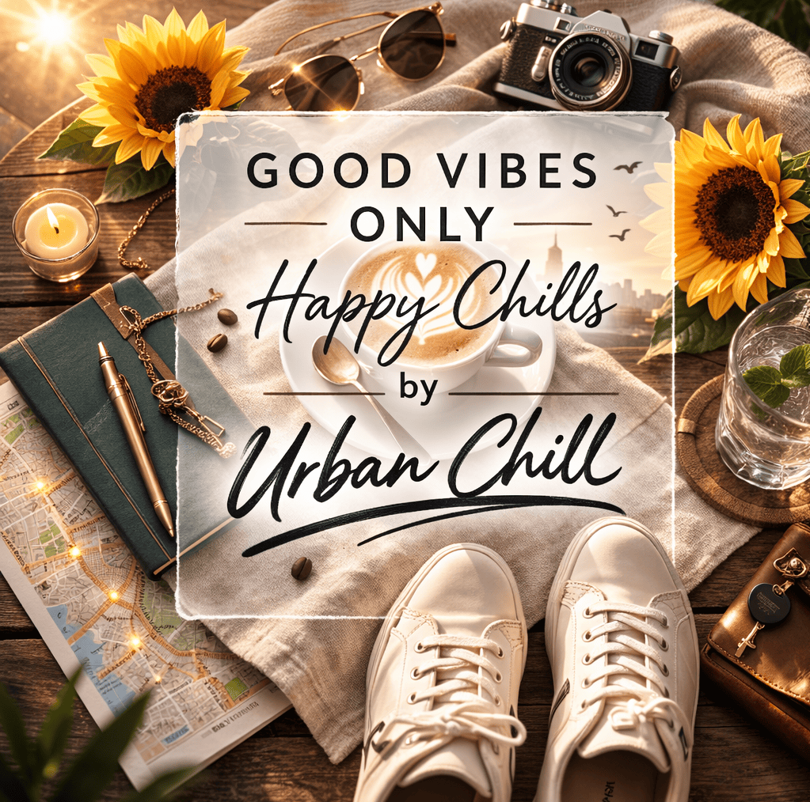

Veilige landing. Lokale zekerheid. Voor zelfstandigen, zakenreizigers en remote workers.
Diensten
Alles is gericht op één ding: rust en continuïteit. Praktisch, discreet en zonder ruis. Je bepaalt zelf hoeveel begeleiding je prettig vindt.
SOLO — Professionele landing € 249
Eendaagse begeleiding voor een kalme start. Ideaal als je aankomt en meteen een betrouwbare basis wilt: veilig vervoer, korte oriëntatie en iemand die de lokale do’s en don’ts kent.
- Ontvangst en veilig vervoer naar je verblijf
- Korte, rustige oriëntatie (praktisch, geen toer)
- Hulp met basiszaken waar nodig (bijv. simkaart, M Pesa, veilige routes)
- Inclusief lichte maaltijd
Ophaalservice tot 30 km inbegrepen; boven 30 km € 0,50 per km.
Late arrivals na 22.00 uur: toeslag € 40.
Accommodatie regel je zelf.
Adventure — Tijdelijke lokale ondersteuning (3 dagen) € 599
Drie dagen met je persoonlijke agent als lokale zekerheid. Voor wie hier werkt, langer blijft of simpelweg rust wil in de eerste dagen. De invulling blijft flexibel: praktische ondersteuning en uitstappen waar passend.
- Dagelijkse begeleiding afgestemd op jouw ritme (werken, landen, herstellen)
- Kleine uitstappen of lokale introductie waar jij dat wil (discreet, zonder druk)
- Inclusief twee maaltijden per dag (geen alcohol)
- Boodschappenservice mogelijk (we bespreken dit bij de intake)
Ophaalservice tot 30 km inbegrepen; boven 30 km € 0,50 per km.
Late arrivals na 22.00 uur: toeslag € 40.
Accommodatie door klant; wij adviseren waar nodig.
Add-on: Extra dag mogelijk voor € 95 (op Adventure).
Goed om te weten: bij uitstapjes en persoonlijke activiteiten zorg je als gast ook voor je agent.
Korte pitch
UrbanChill begeleidt zelfstandige professionals, zakenreizigers en remote workers tijdens een tijdelijk verblijf in Kenia. Geen community, geen opgelegde programma’s — wél vervoer, praktische oriëntatie, context en discrete lokale begeleiding. Jij regelt werk en verblijf. Wij zorgen dat je start klopt en dat je rustig kunt blijven draaien.
Wie is UrbanChill
UrbanChill begeleidt mensen die tijdelijk in Kenia verblijven. Soms om op adem te komen, soms om vanuit Nairobi te werken, soms omdat het leven vraagt om een andere omgeving.
We zijn er voor zelfstandige professionals, zakenreizigers en remote workers die rust en discretie willen. Geen community, geen sociale ruis en geen opgelegde programma’s.
UrbanChill helpt je met een veilige landing en lokale zekerheid: vervoer, praktische oriëntatie, context en begeleiding zodat jij niet alles zelf hoeft uit te zoeken in Nairobi.
Jij regelt je werk en je verblijf. Wij zorgen dat jouw start klopt en dat je rustig kunt blijven draaien.
Privacy-first: geen cookies, geen tracking en geen social.
Een paar maanden Nairobi
Eind 2025 en begin 2026 was ik twee maanden in Kenia. Het besluit viel pas toen ik, op het allerlaatste moment, de weersverwachting voor Nederland opende: sneeuw, wind, grauwheid. Ik dacht: dit hoeft niet. En ik boekte.
In Kenia voelde alles meteen lichter. Zon, fijne temperaturen en vooral die mentale rust die je in Nederland meestal pas vindt als je drie dagen niets hoeft. In de avond koelde het af, maar als Nederlander vind je dat ongetwijfeld gewoon een perfecte temperatuur.
Mijn dagen waren voor werk, de avonden voor de stad. Nairobi verraste me opnieuw op een aangename wijze, beter dan de vorige keer. Goede hotels, plekken waar je zonder haast eet, bars waar de tijd even lijkt stil te staan. Precies de juiste omgeving voor een kleine reset.
Na twee maanden stond ik weer in Nederland. Terug in de fridge, maar wel met genoeg energie om door te gaan.
Daar, ergens tussen werk, warmte en onverwachte rust, ontstond UrbanChill. Tot ziens, Stephen Clark
Meer weten
Korte uitleg. Klik op een onderwerp voor details.
Voor Kenia is een gele koorts vaccinatie verplicht. Regel dit op tijd. Controleer ook je paspoort. Het moet bij aankomst nog zes maanden geldig zijn.
Veel reizigers nemen een tweede telefoon mee, speciaal voor Kenia. Een toestel met alleen noodzakelijke apps geeft rust en voelt veiliger. Een powerbank maakt je dagen eenvoudiger.
Sluit een reisverzekering af met dekking voor medische kosten. Check ook je zorgverzekering. Een kleine aanvulling kan veel rust geven als er iets gebeurt.
Veel klanten vliegen vanaf Düsseldorf of Brussel. Je hoeft nog geen vlucht geboekt te hebben om een intake te plannen.
Als je (deels) vanuit Kenia werkt, helpt het om je basis simpel en betrouwbaar te houden. Denk aan rust, bereikbaarheid en een voorspelbaar dagritme.
UrbanChill helpt je bij tijdelijk werken in Nairobi door je basis rustig, veilig en praktisch op orde te krijgen.
Praktische tips:
- Neem een powerbank en een tweede oplader mee.
- Plan je belangrijke calls op vaste momenten.
- Werk met je eigen data of een lokale sim (veilig opgezet).
- Houd je werkplek rustig: liever één betrouwbare plek dan telkens wisselen.
We houden het praktisch. Jij blijft zelfstandig; wij helpen met lokale zekerheid als dat prettig is.
Waar UrbanChill je bij helpt in Nairobi
UrbanChill helpt mensen die tijdelijk in Nairobi verblijven met een rustige, veilige en goed begeleide start.
We ondersteunen bij:
- landen en acclimatiseren in Nairobi
- tijdelijk leven en werken vanuit Kenia
- praktische oriëntatie in de stad
- lokale context, veiligheid en betrouwbaarheid
- persoonlijke begeleiding zonder groepsstructuren
UrbanChill is geschikt voor zelfstandige professionals, remote workers en mensen die bewust tijdelijk in Kenia verblijven.
We bieden geen platforms of communities, maar persoonlijke begeleiding, zodat je niet alles zelf hoeft uit te zoeken.
Daarnaast ontwikkelt UrbanChill in beperkte kring een kleinschalig netwerk van geselecteerde woonlocaties voor tijdelijke professionals in Nairobi.
Intake
Rustig en zonder druk. Vul in wat je weet. Na verzending nemen we discreet contact met je op.
Contact
Rustig, persoonlijk en discreet. We reageren altijd.
UrbanChill in één oogopslag
UrbanChill helpt bij tijdelijk verblijf en werken in Nairobi.
Gericht op:
- zelfstandige professionals
- remote workers
- mensen die bewust tijdelijk in Kenia verblijven
Focus:
- rust
- discretie
- persoonlijke lokale begeleiding
Geen community. Geen platforms. Geen ruis.